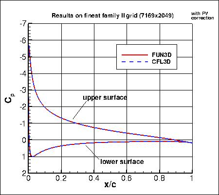
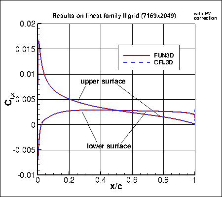
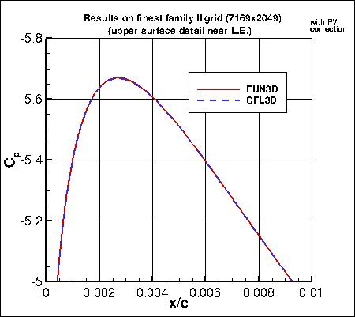
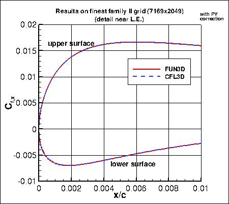
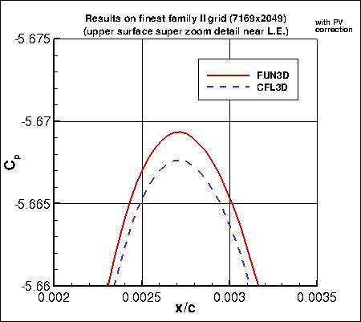
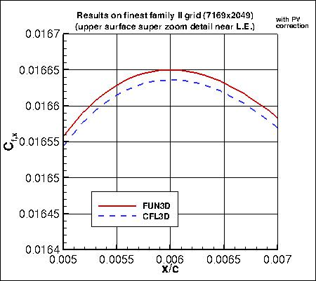
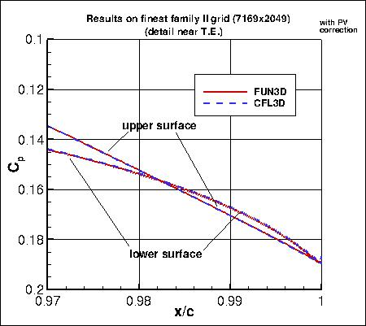
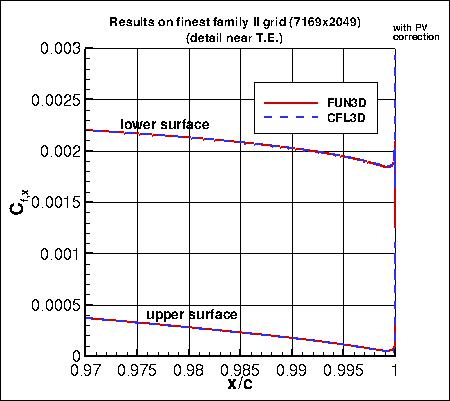
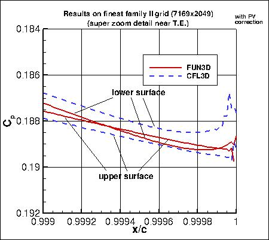
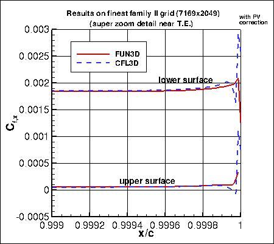

Return to: 2D NACA 0012 Airfoil Validation for Numerical Analysis SA Model Results Intro Page
Return to: 2D NACA 0012 Airfoil Validation for Numerical Analysis Intro Page
Return to: Turbulence Modeling Resource Home Page
TURBULENCE MODEL NUMERICAL ANALYSIS
2D NACA 0012 Airfoil Validation for Turbulence Model Numerical
Analysis
SA Model Results
with Point Vortex BC
for M = 0.15, Rec = 6 million, alpha = 10 deg, Tref = 540 R
Link to SA equations
All results shown on this page included a
farfield point vortex correction (see Thomas and Salas, AIAA Journal 24(7):1074-1080, 1986,
https://doi.org/10.2514/3.9394).
While this correction is relatively small for such a large farfield extent, its influence will
be noticeable at the detailed levels being investigated here. It is believed that results using
the point vortex correction on the 500c grid will be better representative of results obtained on a grid
with farfield boundary at infinity.
For results with no farfield point vortex BC, go to:
2D NACA 0012 Airfoil Validation for Turbulence Model
Numerical Analysis - SA Model Results without Point Vortex BC.
Plots are shown to illustrate grid convergence for the lift, drag, and pitching moment coefficients.
The contributions to the drag coefficient due to the viscosity and pressure are presented separately.
The pitching moment is computed with respect to the 0.25c point.
Unless otherwise noted, CFL3D was run with its default setting of 1st order for turbulence advection,
whereas FUN3D was run with 2nd order for turbulence advection.
Recall that CFL3D was run with the
SA model, whereas FUN3D used
SA-neg.
Results that generated the above plots can be found in the following data files:
fun3d_results_sa_withN.dat,
cfl3d_results_sa_withN.dat (both updated 2/8/2016).
It has been found that the trailing edge streamwise (TES) spacing has a profound influence on the NACA 0012 lift and moment
results. It is believed that the grid family II yields the most accurate results. Grid family II
results from FUN3D and CFL3D (in red) are reasonably consistent with each other, and appear
(when farfield PV correction is employed) to be approaching infinitely-refined results near:
- CL = 1.0912 - 1.0913
- CD = 0.01221 - 0.01222
- CDp = 0.00601 - 0.00602
- CDv = 0.006204 - 0.006205
- Cm = 0.00677 - 0.00679
Grid family I solutions appear to be approaching different values for lift and moment coefficients as
the grids are refined. See zoomed-in plots for CL and CM below.
It is believed that much finer grids than 7169x2049 would be required
for grid family I to start to converge to the correct results.
As seen in the plots, solutions on the family III grids, which have TES spacing between family I
and II, are only just starting to turn toward the correct results for lift and moment on the 7169x2049 grid.
Surface Cp (pressure coefficient) and Cf,x (x-direction component of skin friction coefficient)
are shown from both codes on the 7169x2049 family II grid in the
following figures. The largest differences between the codes occur at the suction peak and very near the trailing edge, and
are visible only in extreme zooms.










Results that generated the above plots can be found in the following data files:
fun3d_cp_sa.dat,
cfl3d_cp_sa.dat,
fun3d_cf_sa.dat,
cfl3d_cf_sa.dat.
Return to: 2D NACA 0012 Airfoil Validation for Numerical Analysis SA Model Results Intro Page
Return to: 2D NACA 0012 Airfoil Validation for Numerical Analysis Intro Page
Return to: Turbulence Modeling Resource Home Page
Recent significant updates:
02/08/2016 - Added N to files for force and moment grid convergence
Page Curators: Christopher Rumsey,
Ethan Vogel,
Clark Pederson
Last Updated: 11/10/2021